umordnungssatz für Doppelsummen
1. Satz
Sei eine absolute doppelsummenkonvergente(*) Reihe (insbesondere existieren nach annahme die grenzwerte ), so dass gilt
Dann folgt, dass auch
konvergiert und zwar gegen den gleichen grenzwert 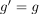
2. Beweis
Beweisskizze:
- wir können uns mit einer endlichen summe von 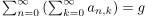 beliebig dem grenzwert
 nähern;
nähern; - diese können wir dann gewohnt umordnen, um eine "partialsumme" von 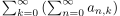 zu erhalten - mit dem gleichen grenzwert
- das heißt wir können mit einer "partialsumme" (die besser wird, je mehr folgenglieder sie zusätzlich addiert) von uns beliebig dem grenzwert nähern;
- dies ist symmetrisch, das heißt wir können uns auch umgekehrt mit einer partialsumme beliebig dem grenzwert 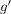 nähern
- aufgrund der eindeutigkeit des grenzwerts gilt 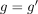
- diese komische bedingung der absoluten doppelsummenkonvergenz ist notwendig, damit jede reihe (nach majorantenkriterium) auch konvergiert und wir im körper bleiben um weiterzurechnen
2.1. Formal
Sei 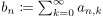.
Wir wissen, dass die Folge 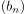 eine konvergente nullfolge ist, da die Reihe konvergiert
Sei  Nach cauchy (und unserer absoluten konvergenz) existiert ein 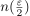, so dass
Nach cauchy (und unserer absoluten konvergenz) existiert ein 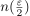, so dass
Das heißt:
Zudem existiert wegen der konvergenz für 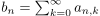 für 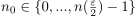 (insbesondere endlich viele, 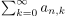 jeweils cauchy => maximum davon wählen) ein 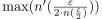, so dass gilt
 5
5
so dass gilt:
2.2. Definition
sei eine absolut doppelsummenkonvergente reihe (oder so ähnlich) falls
konvergiert
2.3. Übertragung auf 
folgt, indem man realteil und imaginärteil schrittweise ausklammert
Angewandt auf die Aufgabe kann man